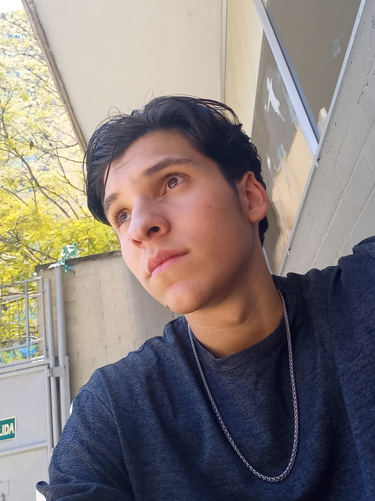
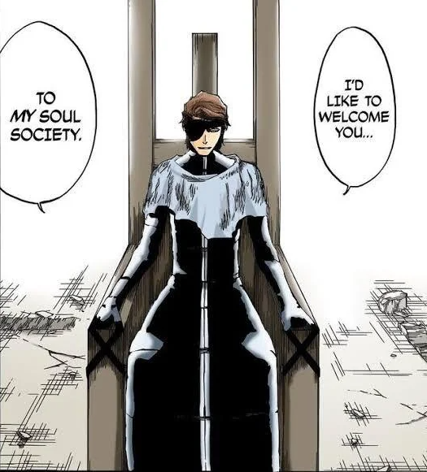

My name is Samuel, I am 19 years old, and I was born in the beautiful city of Medellín. I am a passionate web developer with experience in building dynamic and functional websites.
I love learning new technologies and working on challenging projects. My hobbies include playing basketball, reading manga, cooking, and drawing.

What I do in my free time ?
Since I was a child I always played basketball, this sport has always been with me and that is why I spend most of my free time playing basketball and watching basketball games, but I also take advantage of my free time to practice other sports such as volleyball, boxing and American football.
In the rest of my free time when I'm at home, I listen to music all the time or read a lot of manga and watch a lot of anime.

Hobbies
Play basketball
Draw
Read manga
Weave
Watch anime
Cook
Listen to music
What music do I like ?
Music is part of my life and usually when I am doing most of my activities I always listen to music since this helps me concentrate.
I'm not usually a person who only listens to one genre of music. I really like diversity in music because I feel there's a different kind of music for every occasion. The list you'll find here is one of my most frequently used playlists.